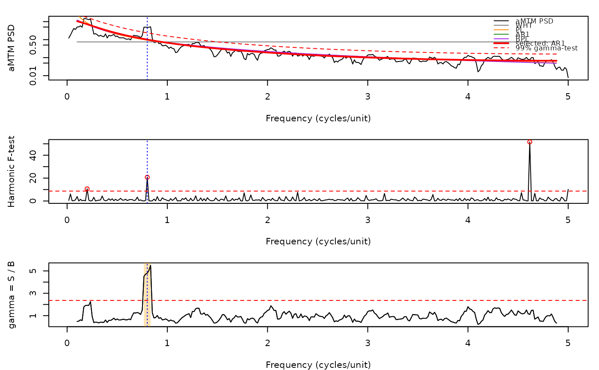

Adaptive multitaper spectrum with background fit and periodic signal detection
Source:R/amtm_spectrum.R
amtm_spectrum.RdThe amtm_spectrum function computes the adaptive
multitaper (aMTM) power spectral density (PSD) of an evenly spaced series, fits
the PSD background by maximum likelihood with several noise models, selects the
best model and detects periodic signals with the dual gamma-test / harmonic
F-test criterion of Di Matteo et al. (2021) and Salinas et al. (2025).
Method: (1) Thomson's adaptively weighted multitaper PSD (Prieto's 'multitaper'
implementation: unit-energy DPSS tapers, adaptive weights iterated until the
relative change is below 9.5e-7, PSD rescaled so that its integral equals the
variance, one-sided by doubling all bins except 0 and Nyquist). The half degrees
of freedom are \(\alpha_k = (\sum_j w_{jk}^2)^2 / \sum_j w_{jk}^4\).
(2) Background models, fitted on the frequency range [2NW/T, f_Nyq - 2NW/T]
(or a user range) by minimising the aMTM log-likelihood
\(M = 2\sum_k [\alpha_k S_k/B_k + \ln(\Gamma(\alpha_k) S_k) - \alpha_k\ln(\alpha_k S_k/B_k)]\):
white noise WHT \(B = c\) (analytical), power law PL \(B = c f^{-\beta}\),
bending power law BPL \(B = c f^{-\beta}/(1 + (f/f_b)^{\gamma-\beta})\), and
first-order autoregressive AR1 \(B = c/(1 - 2\rho\cos(\pi f/f_{Nyq}) + \rho^2)\).
(3) Model selection by the MERIT function (default in SPD_MTM) or AIC
(\(M + 2 n_{free}\), with 0/1/1/3 free parameters besides c for WHT/PL/AR1/BPL).
Adjacent aMTM frequencies are correlated over the 2W band, so these criteria tend
to favour flexible models (BPL is sometimes chosen for pure white noise): inspect
model_stats and use bkg_model to force a model when needed.
The Python code minimises M with scipy SLSQP (or Powell) on the raw parameters;
here stats::nlminb is used on (log c, beta[, gamma, log fb]) with the same
bounds and starting values. Both reach the same optimum for PL (parameters within
~1e-5 relative); for BPL R reaches the same or a lower (better) M, because SLSQP
can stop in a local minimum.
(4) Gamma-test \(\gamma_k = S_k/B_k\), whose threshold is taken from the
mixture-of-gamma CDF built from the histogram (bin width 0.1) of \(\alpha_k\);
harmonic F-test with threshold qf(conf, 2, 2K-2). A frequency is a
detected periodic signal when an F-test peak above its threshold falls inside a
band where \(\gamma_k\) exceeds its threshold and that band is at least
\(NW/(2T)\) wide.
Translated from the Python package amtm_signaldetect v1.0.6 (Hector A. Salinas; functions get_amtm_specs, get_spectra_dofA, get_background_psdfit, get_gamtest_confs, get_ftest_confs, get_gftest_confpeaks) and from Prieto's Python 'multitaper' v1.2.0 (MTSpec, adaptspec, ftest), both MIT licensed. The AR1 model and the AIC/MERIT criteria follow the IDL code SPD_MTM (Di Matteo et al., 2021). This is not an Acycle function.
Cyclostratigraphic interpretation: for a depth series the frequency axis is in
cycles per depth unit (e.g. cycles/m if depth is in m); the period (thickness) of a
detected cycle is 1/frequency. The fitted background is the null hypothesis of
"no cycle": use PL/BPL/AR1 for the red spectra typical of sedimentary proxies, and
treat the gamma-test as the test for excess power above the red background and
the F-test as the test for a phase-coherent sinusoid. Because sedimentation-rate
changes smear orbital lines, a real Milankovitch signal in depth often passes the
gamma-test over a band but gives only a moderate F-test; inspect both, use
freq_range to exclude trends/very high frequencies, and compare the ratios
of detected periods with expected orbital ratios (e.g. 405:100:~20 kyr) rather
than relying on single detections. The frequency resolution is \(2NW/T\) with
\(T\) the series length in depth units.
Usage
amtm_spectrum(
data = NULL,
nw = 3,
k = NULL,
nfft = NULL,
models = c("WHT", "PL", "AR1", "BPL"),
selection = "MERIT",
bkg_model = NULL,
freq_range = NULL,
conf_level = 0.99,
prewhiten = FALSE,
pw_order = 2,
genplot = FALSE,
verbose = FALSE
)Arguments
- data
Input record: a matrix or data frame with depth/time in column 1 (evenly spaced; rows are sorted by increasing depth/time) and the proxy value in column 2 (no
NA/Infvalues). Required (Default=NULLgives an error).- nw
Time-bandwidth product NW of the multitaper spectrum (numeric, > 0, typically 2 to 4). Larger values give a smoother spectrum with lower variance but a coarser frequency resolution (2NW/T).
Default=3.- k
Number of DPSS tapers (integer, >= 2, at most about
2*nw - 1);NULLusesround(2*nw - 1), as in the Python code.Default=NULL.- nfft
Number of FFT points, i.e. zero padding (integer);
NULLuses the series length N (the Python default); values smaller than N are replaced by 2N+1, as in 'multitaper'.Default=NULL.- models
Background models to fit (character vector, any combination of
"WHT"(white noise),"PL"(power law),"AR1"(first-order autoregressive, red noise) and"BPL"(bending power law); case-insensitive).Default=c("WHT", "PL", "AR1", "BPL").- selection
Criterion used to choose the background model among
models(character, case-insensitive):"MERIT"(MERIT goodness-of-fit function of SPD_MTM) or"AIC"(Akaike information criterion); the model with the lowest value is selected.Default="MERIT".- bkg_model
Background model to use for the detection instead of the automatically selected one (character, one of the names in
models);NULLuses the model chosen byselection.Default=NULL.- freq_range
Frequency range used for the background fit and the detection: numeric vector
c(f_low, f_high)withf_low < f_high, in cycles per unit of column 1 ofdata(e.g. cycles/m);NULLuses [2NW/T, f_Nyq - 2NW/T]. At least 12 frequencies must fall in the range.Default=NULL.- conf_level
Confidence level of the gamma-test and F-test thresholds used for the detection (numeric, strictly between 0 and 1, e.g. 0.95 or 0.99).
Default=0.99.- prewhiten
Prewhiten the series with an AR(
pw_order) filter (viaamtm_prewhitenwith its defaultnw=4,k=7) before the analysis (logical, TRUE or FALSE); the spectrum, fits and detection are then made on the prewhitened series and a recoloured PSD is returned inprewhiten.Default=FALSE.- pw_order
Order of the AR prewhitening filter (integer, >= 1); only used when
prewhiten=TRUE.Default=2.- genplot
Plot the results with
plot_amtm_spectrum(logical, TRUE or FALSE).Default=FALSE.- verbose
Print progress messages, the fitted parameters of each model and the selected model (logical, TRUE or FALSE).
Default=FALSE.
Value
A list with elements
freq,psd,alpha,ftest: aMTM frequency (cycles per unit), one-sided PSD, half degrees of freedom and harmonic F-test over [0, f_Nyq].fit_index: indices offreqused for the fit/detection;fit_freq: those frequencies.background: matrix (fit range x models) of fitted backgrounds.params: list of fitted parameters per model (WHT: c; PL: c, beta; AR1: c, rho; BPL: c, beta, gamma, fb (after the beta > gamma correction)).model_stats: data frame with log-likelihood M, AIC, MERIT and convergence code per model;selected_model;background_selected.gamma: gamma-statistic S/B of the selected model (fit range).thresholds: data frame with confidence levels (0.5, 0.9, 0.95, 0.99 andconf_level) and the gamma-test and F-test thresholds.gamma_threshold,f_threshold: thresholds atconf_level.f_peaks,gamma_peaks: indices (within the fit range) of F-test and gamma-test peaks above threshold;gamma_bands: data frame of gamma bands (f_start, f_end) wider than NW/(2T).detected: data frame of periodic signals passing both tests (frequency, period, ftest, gamma, psd, background).prewhiten: NULL or list(ar_coef, psd_recoloured).settings: list of the settings used (nw, k, nfft, dt, n, conf_level).
References
Di Matteo, S., Viall, N. M., & Kepko, L. (2021). Power spectral density background estimate and signal detection via the multitaper method. Journal of Geophysical Research: Space Physics, 126, e2020JA028748. doi:10.1029/2020JA028748
Salinas, H. A., et al. (2025). Journal of Geophysical Research: Space Physics. doi:10.1029/2025JA034006 (open-source Python aMTM signal detection)
Prieto, G. A. (2022). The multitaper spectrum analysis package in Python. Seismological Research Letters, 93(3), 1922-1929. doi:10.1785/0220210332
Thomson, D. J. (1982). Spectrum estimation and harmonic analysis. Proceedings of the IEEE, 70(9), 1055-1096. doi:10.1109/PROC.1982.12433
Author
Michiel Arts (R translation); original Python code: Hector A. Salinas (amtm_signaldetect) and German A. Prieto (multitaper); original method and IDL code SPD_MTM: Simone Di Matteo
Examples
# \donttest{
# synthetic depth series: AR(1) red noise + 2 cycles (periods 5 m and 1.25 m)
set.seed(1)
n <- 600
depth <- seq(0, by = 0.1, length.out = n)
red <- as.numeric(stats::filter(rnorm(n), 0.8, method = "recursive"))
x <- red + 1.2 * sin(2 * pi * depth / 5) + 0.8 * sin(2 * pi * depth / 1.25)
res <- amtm_spectrum(data = cbind(depth, x), nw = 3, genplot = FALSE)
res$selected_model
#> [1] "AR1"
res$detected # frequency in cycles/m, period in m
#> frequency period ftest gamma psd background
#> 1 0.8 1.25 20.75029 4.802533 4.81978 1.003591
plot_amtm_spectrum(res)

# }